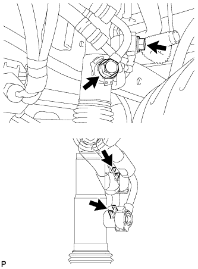
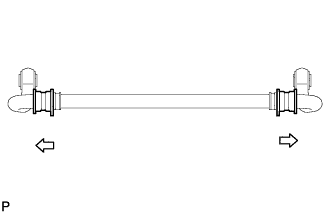
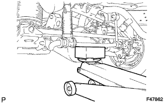
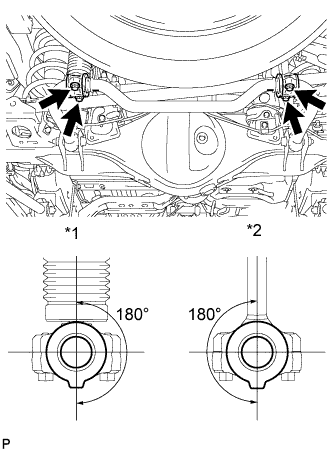

REAR STABILIZER BAR > INSTALLATION |
| 1. INSTALL REAR STABILIZER LINK ASSEMBLY |
Install the rear stabilizer link assembly with the bolt and nut.
| 2. INSTALL REAR STABILIZER CONTROL CYLINDER |
Install the 2 bleeder plug caps to the rear stabilizer control cylinder.
Install the rear stabilizer control cylinder with the bolt and nut.
| 3. CONNECT REAR STABILIZER CONTROL TUBE ASSEMBLY |
|  |
Connect the rear stabilizer control tube to the rear stabilizer control cylinder with the 2 union bolts and 2 new pressure port gaskets.
| 4. TEMPORARILY INSTALL REAR STABILIZER BAR SUB-ASSEMBLY |
|  |
Install the 2 rear stabilizer bushes to the rear stabilizer bar.
 | Outer Side |
Temporarily install the rear stabilizer bar with the 2 bolts and nuts.
| 5. INSTALL REAR STABILIZER LOWER BRACKET |
|  |
Support the rear stabilizer bar with a jack.
|  |
Install the rear stabilizer bar and 2 rear stabilizer lower brackets with the 4 bolts.
| *1 | Rear Stabilizer Control Cylinder |
| *2 | Rear Stabilizer Link |
| 6. BLEED SUSPENSION FLUID |
Bleed the suspension fluid (Click here).
| 7. STABILIZE SUSPENSION |
Lower the vehicle.
Bounce the vehicle up and down several times to stabilize the suspension.
| 8. TIGHTEN REAR STABILIZER BAR SUB-ASSEMBLY |
Tighten the 2 bolts and 2 nuts.
| 9. INSTALL STABILIZER CONTROL VALVE PROTECTOR |
Install the stabilizer control valve protector with the 2 bolts.
| 10. INSTALL SIDE STEP ASSEMBLY LH |
Attach the 6 clips to install the side step.
Install the 3 screws.
Using a T30 "TORX" socket wrench, install the 2 screws.
Install the side step with the 6 bolts.
Connect the connector.
Attach the clamp.
| 11. INSPECT VEHICLE HEIGHT |
Inspect the vehicle height (Click here).